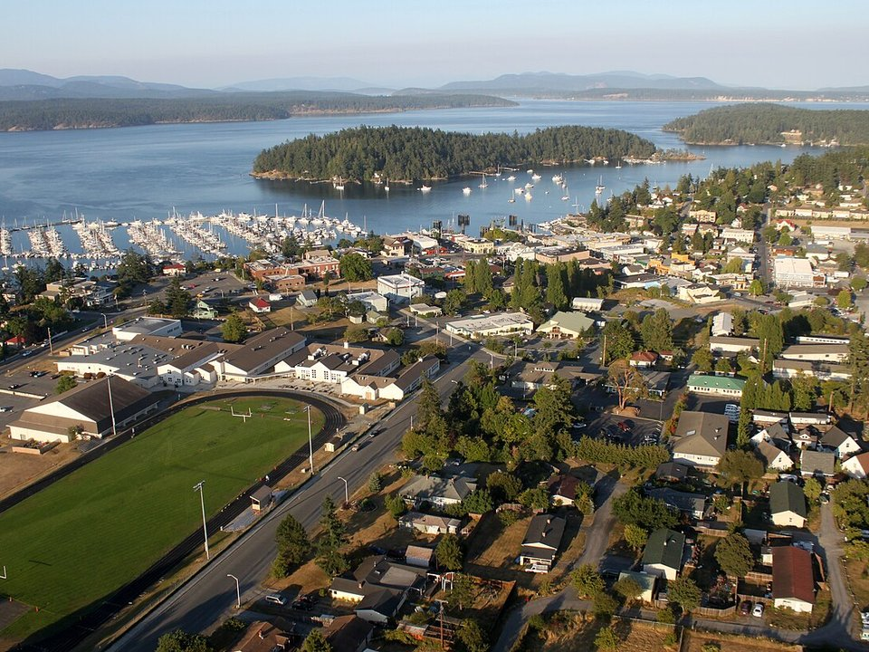

Friday Harbor · Inn
Friday Harbor House
A harbor-view inn with fireplaces, steps from the ferry landing.
Official details for Friday Harbor HouseOrcas, lavender and island harbors.
The San Juan Islands sit in the Salish Sea between Seattle and Vancouver Island, and flying in beats the ferry line by hours. Land at Friday Harbor, walk from the airport into town, stay at a harbor-view inn or at Roche Harbor’s historic resort, look for orcas from Lime Kiln Point, visit the lavender farm and English and American Camps, and eat seafood with a view of the ferries coming in. Floatplanes can land right in the harbor.

Time illustration: direct distance at 150 KTAS plus 15 minutes for departure and arrival, matching the discovery page. Use ForeFlight for your actual flight plan.
KFHR, Friday Harbor, is a non-towered Port of Friday Harbor airport at 113 feet with a 3,402-foot runway, about a 10-minute walk from the harbor and town.
Friday Harbor Airport, Friday Harbor, WA
Busy with floatplanes and commuters; turn on landing lights near the field. Bring your own tie-down ropes. Noise abatement: avoid takeoffs between 10 p.m. and 7 a.m. Customs apron on the east side of the terminal ramp. (FAA chart supplement remarks.) No live fuel price is shown.
Pacific Northwest weather: low ceilings, drizzle and mountain obscuration much of the year from October to May; clear, dry summers with morning marine stratus on the coast; icing in winter clouds; and the Cascades between the coast and the interior. About 2150 nm from Myrtle Beach: two long days each way with several fuel stops. Plan a week, or overnight on the way out and back.
Friday Harbor, WA · Port of Friday Harbor 360-378-4724
Water lanes: 03W/21W 10,000 × 2,000 ft; 12W/30W 6,000 × 1,000 ft.
All takeoffs should be performed north of Brown Island. A general-aviation overnight fee applies. Customs notification service is available. (FAA chart supplement remarks.)
Expect ferries, boats and commercial floatplanes in the harbor.
Water landing rules, conditions and docking change; call the base and check the chart supplement before you go.
Rates and availability need travel dates. Summer books months ahead.
A harbor-view inn with fireplaces, steps from the ferry landing.
Official details for Friday Harbor HouseThe 1886 Hotel de Haro, cottages and a marina at the island’s north end.
Official details for Roche Harbor ResortA historic mansion resort on Orcas Island.
Official details for Rosario ResortPrices and availability for your dates, through our partner Stay22. This is an affiliate link: we may earn a commission at no cost to you. The picks above are never paid.
Reserve weekend dinners.
Steaks and seafood above the marina, with the evening colors ceremony at sunset.
Official details for McMillin’s Dining Room at Roche HarborRestaurants in Friday Harbor and Roche Harbor.
Visit San Juan Islands for More restaurantsOrcas are most often seen May to September.
The “whale watch park,” with a lighthouse above the strait.
Washington State ParksThis prototype links to the local visitor site. It does not yet match events to your travel dates.
Fields in bloom on San Juan Island.
Pelindaba for Lavender seasonOrca and humpback sightings.
The Whale Museum for Whale seasonLong days and calm water.
Visit San Juan Islands for Island seasonCheck the local calendar when choosing a weekend, and confirm dates and tickets with the organizer.
A sample island weekend. This is a two-day flight each way; plan a week. No bookings or availability confirmed.
Land at KFHR or W33 mid-morning.
Walk into town and the Whale Museum.
Lime Kiln Point for whales, then back to the airport.
Land at KFHR or W33, subject to weather and your actual flight plan.
Walk into Friday Harbor and the Whale Museum.
Dinner with a harbor view.
Lime Kiln Point for whales.
English Camp and Roche Harbor.
Dinner at McMillin’s at Roche Harbor.
The lavender farm.
Return the car and allow time at the airport.
Pacific Northwest ceilings can drop quickly; leave with a margin.
English Camp.
Roche Harbor.
Dinner at McMillin's.
This guide is part of a multi-stop flying trip. Set your dates and aircraft, then swap stops to make it your own.
These details make the difference between an appealing list and a usable getaway.
Lodging and a car or bikes.
About 2,150 nm from Myrtle Beach: two long days each way.
Bring tie-downs; busy with floatplanes.
June to September.
Picks and links reviewed by WingAway Weekends. Hours, prices, menus and availability change often, so confirm directly with each place before booking. Spotted something out of date, or have a favorite we missed? Email us at hello@wingawayweekends.com.
WingAway Weekends helps you discover the destination. Use ForeFlight and current official aviation information for route, performance, weather, NOTAMs and preflight decisions. Flight planning and PIC responsibility stay with the pilot.